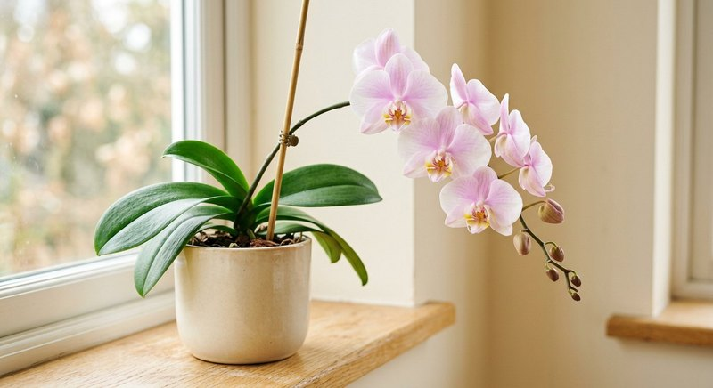

Виды растений · 5 мин чтения
Удобрение для орхидей: как подкармливать фаленопсис
Орхидея в коре и орхидея в другом субстрате могут по-разному реагировать на полив и питание. Для фаленопсиса особенно важны умеренность, свободный сток воды и удобрение, которое разрешено для орхидей.
Материал обновлён 24.10.2026 · Справочная информация, не заменяет инструкцию на упаковке.

Когда орхидее нужна подкормка
Ориентируйтесь на признаки активного роста — новые листья, корневые кончики или цветонос — и на рекомендации для конкретного вида. В период замедления роста подкормки обычно сокращают. Частота и дозировка зависят от средства; не используйте режим, рассчитанный на другой концентрат.
Сухие или повреждённые корни не повод добавлять больше питания. Сначала проверьте состояние корней, субстрата и освещения. Подкормка не заставляет орхидею цвести по требованию и не исправляет проблемы содержания.
Как внести раствор без лишнего риска
Следуйте указаниям производителя именно для орхидей. Не превышайте концентрацию и не оставляйте горшок стоять в питательном растворе, если инструкция этого не предусматривает. После полива воде нужно свободно стечь; застой влаги опасен для корней.
Универсальный Семяздрав в описании продавца заявлен для орхидей. Его можно рассматривать только в рамках этикетки и указанной нормы. Не заменяйте дозировку, предназначенную для обычных комнатных цветов, предположением о том, что орхидеям полезно больше.
Типичные ошибки
Частые ошибки — кормить сухие корни, повышать концентрацию, вносить удобрение в каждый полив без учёта инструкции и игнорировать качество воды. Белый налёт на коре или стенках горшка может быть поводом проверить накопление солей и пересмотреть уход.
Для орхидеи важны не только удобрения: рассеянный свет, проветриваемый субстрат, подходящий режим полива и температура. Если растение не растёт или теряет тургор, сначала проверьте эти факторы.
Фазы фаленопсиса: когда питание уместно
Фаленопсис живёт циклами, и подкормку разумно привязывать к фазе, а не к числу месяца. Когда растут новые корни с ярко-зелёными кончиками и разворачивается молодой лист, растение активно потребляет питание — это основное окно для регулярных подкормок по инструкции средства. Во время выгонки цветоноса и цветения режим не усиливают: задача владельца — стабильность полива и света, а не стимуляция «ещё сильнее». После цветения, пока орхидея отдыхает и не показывает нового роста, частоту снижают.
Простой домашний ориентир — смотреть не на цветы, а на корни сквозь стенки прозрачного горшка и на точку роста листьев. Есть активные корни и новый лист — есть и расход питания. Нет роста несколько недель при хорошем свете — сначала проверьте корни и субстрат, а не дозу. Общие принципы выбора средства для разных видов собраны в руководстве как выбрать удобрение для комнатных растений.
Кора, замачивание и соли: техника внесения
Фаленопсисы чаще растут не в грунте, а в коре, которая почти не удерживает питание. Поэтому раствор удобно вносить замачиванием: горшок ставят в ёмкость с приготовленным по этикетке раствором на время обычного полива, затем дают воде полностью стечь. Важно не оставлять воду в розетке листьев и не смачивать цветы. Между подкормками кору периодически проливают чистой водой: так вымываются соли, которые иначе накапливаются на корнях и дают сухие коричневые кончики веламена.
Признак солевого перегруза — белый или рыжеватый налёт на коре и стенках горшка при общем угнетении корней. В такой ситуации подкормки ставят на паузу и несколько поливов делают только чистой водой. Если похожая картина наблюдается у других растений коллекции, сверьтесь со статьёй перекорм удобрением: признаки и помощь. Точность дозы для орхидей особенно важна, поэтому раствор готовьте по правилам из материала как развести жидкое удобрение и не «усиливайте» его ради цветения.
Ведите для орхидей отдельные отметки в общем журнале: дата замачивания с удобрением и дата пролива чистой водой. Чередование, видимое на бумаге, надёжно защищает кору от незаметного накопления солей между цветениями.
- кормите в фазе роста корней и листьев, а не «для бутонов»;
- вносите замачиванием и полностью сливайте воду;
- не оставляйте влагу в розетке листьев;
- регулярно проливайте кору чистой водой от солей;
- при налёте на коре сначала пауза и промывка, потом график.
Частые вопросы
Можно ли удобрять орхидею во время цветения?
Сверьтесь с этикеткой удобрения и рекомендациями для конкретного вида. Не повышайте дозу ради более долгого цветения.
Подойдёт ли универсальное удобрение для фаленопсиса?
Только если орхидеи прямо указаны в перечне культур и на упаковке есть подходящая инструкция. В описании Семяздрава орхидеи перечислены среди растений для применения.
Можно ли опрыскивать листья фаленопсиса удобрением?
Только если внекорневой способ прямо указан на этикетке вашего средства, и так, чтобы раствор не застаивался в розетке и не попадал на цветы. При сомнениях выбирайте замачивание — для орхидей оно предсказуемее.
Орхидея не цветёт повторно. Увеличить дозу?
Нет. Повторное цветение чаще связано со светом, перепадом дневных и ночных температур и состоянием корней, а не с количеством удобрения. Проверьте эти факторы и сохраняйте обычную дозировку.